Introduction
The Computer Science handbook is a handbook designed to explain algorithms and data structures in way that anyone can understand. Many websites (eg Wikipedia) contain lengthy and wordy explanations that are full of technical jargon. We have tried our hardest to simplify all language to make it easy to read without any math or computer science background. We hope to share our knowledge with you and we ask only one thing from you. You must learn something before you leave!
Each article with have multiple sections to help you understand the content.
Introduction
The introduction section gives a brief overview of what the article is about. It will usually come with a prerequisite section which will contain topics that will be recommended to have been read before the article.
Implementation
The implementation section will be an implementation of the article in Java. It is recommended that you try to implement things yourself first before looking at the implementation. If you truly understand the concept, then you will never have to memorize a single line of code. The code will come from your understanding of how it works.
Applications
The applications section will be about real world applications of the concept that show why the concept is important.
Exercises
The exercises section contains practice problems to test if you truly understand the concept. Many of these questions come from real interview questions.
Introduction
There are some fundamental topics about writing computer programs that we must learn before we can move on to the basic theory.
First we must learn how to write a basic Java program with control structures and variables.
We use closets or drawers to store our clothes and garages to store our cars. Similarly, we store different types of data in different kinds of data types. Picking the right data type for the type of information is important. Most programming languages will support these data types.
| Data type |
Number of bits |
Range |
| boolean |
1 bit |
true or false |
| byte |
8 bits |
-128 to 127 |
| short |
16 bits |
-32,768 to 32,767 |
| int |
32 bits |
−2,147,483,648 to 2,147,483,647 |
| long |
64 bits |
−9,223,372,036,854,775,808 to 9,223,372,036,854,755,807 |
| char |
8 bits |
256 bits |
| float |
32 bits |
3.4e−038 to 3.4e+038 |
| double |
64 bits |
1.7e−308 to 1.7e+308 |
| Operation |
Description |
Example |
| z = x + y |
Addition |
z = 1 + 2, z = 3 |
| z = x - y |
Subtraction |
z = 3 - 1, z = 2 |
| z = x * y |
Multiplication |
z = 3 * 2, z = 6 |
| z = x / y |
Integer division |
z = 5 / 2, z = 2 or z = 9 / 3, z = 3 |
| z = x % y |
Modulus (or remainder) |
z = 5 % 3, z = 2 or z = 6 % 2, z = 0 |
| x++ |
Increment by 1 |
x=5, x++, x = 6 |
| x-- |
Decrement by 1 |
x=5, x--, x = 4 |
If statement:
if (expression){
do action;
}
Loops:
while(expression){
do action;
}
Next, we analyze how long a program will take to perform a calculation and how much memory a program will used based on the inputs.
Introduction
Next: Advanced Recursion
Recursion is process that repeats itself in a similar way. Anything that has its definition nested inside itself is considered to be recursive. For example GNU stands for GNU not Unix!. Expanding this acronym gives us ((GNU not Unix) not Unix!). As you can see this will go on forever and GNU's definition is nested inside itself so it is recursive. The Fibonacci sequence is also recursive: F(n) = F(n-1)+F(n-2). Inside the function F, we see two more F's!
In computer science infinite looping is bad because computers do not know how to terminate so we need some way to stop it. We will call a stopping point the base case. A base case is the case where the recursion will stop. Everything must eventually reduce to a base case. For the Fibonacci sequence, the base case is F(0) = 1 and F(1) = 1 and we can see that for all N>1, the Fibonacci sequence will reach the base case.
So for something to be recursive in computer science, it needs:
- a recursive definition (contained in itself) and
- a base case that all valid inputs will eventually reach
Template for recursion:
recursion(parameter)
if base_case (parameter):
stop
recursion( operation(parameter) )
- recursion is the recursive function
- base_case is the check if the parameter has reached the base case
- operation reduces the parameters towards the base case
Factorial
Let's look at a simple recursive function: factorial function.
1! = 1
n! = 1 * 2 * 3 .... n.
Or we could write it as n! = (n-1)! * n. We now see that in this form, the factorial function is defined within itself which makes it recursive. Our base case is 1! = 1.
Example:
4!
= 3! * 4
= 2! * 3 * 4
= 1! * 2 * 3 * 4
= 1 * 2 * 3 * 4
= 24
Formalization
Let f(n) be the nth factorial number where n is a positive integer.
Base case:
f(1) = 1
Recurrence:
f(n) = f(n-1) * n
Example:
f(4)
= f(3) * 4
= f(2) * 3 * 4
= f(1) * 2 * 3 * 4 [Base Case]
= 1 * 2 * 3 * 4
= 24
Implementation
int factorial(int n){
if(n == 1)return 1;
return factorial(n - 1) * n;
}
Sum of digits of a string
We can use recursion in many places and we can apply it to simple problems that you probably have not thought about. Summing the digits of a string can be done using simple loop but we can also use recursion to do it.
Let's say we have the string '23528'. The total is equal to the first digit + the sum of the rest of the digits. 2 + '3528'. We can do the exact same thing for the rest of the digits: the second digit + the sum of the rest of the digits and keep doing this until we have no more digits.
- '23528'
- '3528' + 2
- '528' + 5
- '28' + 10
- '8' + 12
- '' + 20
- 20
Formalization
Let sum(string) be the sum of digits in a string
Let n be the length of the string
For simplicity, let string[x..y] be the substring of the string from index x to index y. The starting index will be 1.
Example:
string = 'abcd'.
string[1..3] = 'abc'
Base case:
sum(empty) = 0
Recurrence:
sum(string) = sum(string[2..n]) + int(string[1])
Example:
sum('23528')
= sum('3528') + 2
= (sum('528') + 3) + 2
= ((sum('28') + 5) + 3) + 2
= (((sum('8') + 2) + 5) + 3) + 2
= ((((sum('') + 8) + 2) + 5) + 3) + 2
= ((((0 + 8) + 2) + 5) + 3) + 2
= 20
Implementation
int sum(string str){
int n = str.length();
if(n == 0){
return 0;
}
else{
int charToNum = (str.charAt(0)-'0');
return sum(str.substring(1,n)) + charToNum;
}
}
sum('23528');
Count
Let's say we have an string of N characters and we want to find the number of times the letter 'c' appears. This time we need to add some logic to the problem.
If the first letter of the string is a 'c', then we can add 1 to the count. Otherwise, we don't add anything. We can do the exact same thing for the substring without the first letter. If the second letter of the string is a 'c', we add 1 other we don't add anything etc.
For example we have the string 'cacaec'. Since the first letter is a 'c' we add 1 to the count. Then we remove the first letter and get 'acaec', the first letter is not a 'c' so we don't add to the count. We keep reducing this way until we get an empty string and we return the count.
- 'cacaec'
- 'acaec' +1
- 'caec' + 1
- 'aec' + 2
- 'ec' + 2
- 'c' + 2
- '' + 3
- 3
Formalization
Let count(string) be the number of 'c's in the string
For simplicity, let string[x..y] be the substring of the string from x to y.
Example:
string = 'abcd'.
string[1..3] = 'bcd'
Base case:
count(empty) = 0
Recurrence:
count(string) = {if string[n]=='c' count(string[2..n])+1
{else count(string[2..n])
Example:
count('cacaec')
= count('acaec')+1
= (count('caec')+0)+1
= ((count('aec')+1)+0)+1
= (((count('ec')+0)+1)+0)+1
= ((((count('c')+0)+0)+1)+0)+1
= ((((count('')+1)+0)+0)+1)+0)+1
= ((((0+1)+0)+0)+1)+0)+1
= 3
Implementation
int count3(string str){
int n = str.length()
if(n == 0)return 0;
if(str.charAt(0) == 'c'){
return count3( str.substring(1, n) ) + 1;
}
else{
return count3( str.substring(1, n) );
}
}
count3('cacaec');
Calculate Exponential
Let's say we wanted to find xn and for the sake of this problem we want the last four digits of that number. Note that 2674 mod 10000 = (2673 mod 10000) * 267 mod 10000. This is important because it means we can take the last 4 digits in each step instead of having to compute the giant exponent and then taking the last 4 digits. We can do this problem very easily by using a simple loop, but we can do better by using recursion. By definition of exponents, xa * xa = x2a. Using this we can see that if n is divisible by 2, then xn = xn/2 * xn/2.
For example 54 = 52 * 52
But let's take a look at xn/2. If n is even we can do the exact same thing! xn/2 = xn/4 * xn/4. We have a recurrence relation and the base case is simple: if x1 = x.
But what if n is odd and not 1? Then we have xn = xn/2 * xn/2 * x and we can now solve this problem using recursion.
Formalization
Let exp(b,n) be b^n
Base case:
exp(b,1) = 1 [Since b^1 = b]
Recurrence:
exp(b,n) = {if n divisible by 2 exp(b,n/2)^2 % 10000
{else (exp(b,n/2)^2)*b % 10000
Example: (for simplicity, leave out the modulus)
exp(3,10)
= exp(3,5)^2
= (exp(3,2)^2))*3)^2
= (((exp(3,1)^2)*3)^2) [Base case]
= (((3^2)^2)*3)^2)
= ((9^2)*3)^2)
= (81*3)^2
= (243)^2
= 59049
Implementation
int exponent(int b,int n){
if(n==1)return b;
if(n%2==0){
int x = exponent(b,n/2);
return (x * x)%10000;
}
else{
int x = exponent(b,n/2);
return (x*x*b)%10000;
}
}
Exercises
- Given an array of N integers, write a recursive function to get the sum
- Given a string S, write a recursive function to determine if it is a palindrome.
- Given a number N, write a recursive function to output the number in binary.
- Given a string S, write a recursive function to return a reversed string
Introduction
Sorting is arranging an array of n elements in either increasing or decreasing order by some property. It is very useful in computer science for efficiency in other algorithms that usually require a search.
A stable sort is a sort that can preserve sorting of other properties. For example if we have
(3,G), (1,G), (3, A), (6 K), (1,B)
and we want to sort by the first property in increasing order, we will have:
(1, G) (1,B) (3,G), (3,A) (6 K).
If we sort again by the second property we have (1,B) (3, A) (1, G) (3, G) (6,K) then the sort is stable as the first sort is preserved. However if we had (1,B) (3, A) (3, G) (1, G) (6, K), then the sort would be unstable.
Slow Sorts
Slow sorts are sorts that have the runtime of O(n2). Although they should almost never be used, it is good to know how to implement a simple sort.
Fast Sorts
Fast sorts are sorts that have a runtime of O(nlogn). They are very fast and you will usually use merge sort or quick sort for sorting in the real world. Most language will have their own implementation of a quick sort or merge sort in their standard libraries.
Super Slow Sorts
Just for fun, these are some silly sorts that you should never use.
Exercises
- Given two sorted arrays of N numbers, merge the two arrays into an single array of size 2N.
- Find the minimum number of swaps to sort an array
- Find the minimum number of adjacent swaps to sort an array
Introduction
Data structures are a way of storing data such that it can be used in an efficient way. Although many of these data structures are already built into various languages, it is important to understand how they work. By understanding the implementations we can have a sense of which data structure to use in different problems as well as determine how efficient they are.
An abstract data type is a conceptual model for representing data. An abstract data type tells what it should do as opposed to how it should work. It will tell us what operations it should have but should not tell us how to implement them.
For example, a bottle should be able to hold water and allow us to drink from. This tells us what it should do but we don't need to know how it works or how it is made. A plastic water bottle is an implementation of a bottle. It holds water in its interior and allows us to drink by unscrewing the cap and letting us pour water down our throat. A thermos is also an implementation of the bottle, it holds fluid inside it, but this thermos has a lid that can be popped open and water can come from it. A thermos and plastic water bottle are different implementations as they are made differently and used differently, but they fundamentally do what a bottle is supposed to do: store liquid, and provide a way to drink. A bottle does not actually exist, but types of bottles do.

Some implementations of abstract data types are better than others for different purposes. For example plastic water bottles are very cheap whereas a thermos is more expensive but a thermos can hold hot water and keep it warm for a long period of time. When thinking of a implementation for an abstract data type we need to know what we need it for.
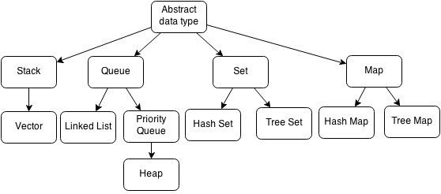
For more intermediate data structures, read the advanced data structures page.
Imagine you had a row of parking spaces where each was labelled with a number. If you wanted to know what the license plate of a car at parking space 4 was, all you have to do is go to the parking space and read off the license plate. If you wanted to park your car at parking space 5, you would go to parking space 5 and put your car in there only if there was nothing there.
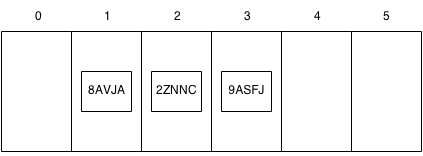
Let's say that you had cars at parking spaces 1, 2, and 3. If you wanted to insert a new car at parking space 1 and keep the rest of the cars in the same order, you would have to shift the cars in the parking spaces from 1, 2 and 3 to 2, 3 and 4 by getting in each car and parking them in the new spaces which would take some time. This type of structure is an array.
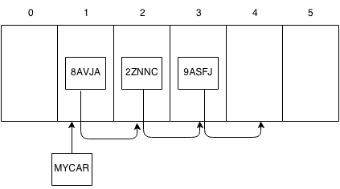
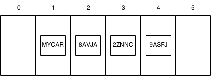
An array is the most basic data structure that stores elements of the same type in a fixed block. The fact that it is in one block and the same type is important because it allows accessing elements very quickly if you have the index. All you have to do is go to the index and retrieve the element. However, inserting elements in the array is slow because you would have to shift all the elements and also if you want to shift past the fixed size you will get an error. (Imagine the parking spaces are full and you wanted to insert a car somewhere, there will still be one car that will have no parking space).
Arrays can be multidimensional meaning you can have an array of array of objects. (Imagine a parking lot with multiple rows of parking spaces).
| Operation |
Create |
Get |
Set |
| Time Complexity |
O(n) |
O(1) |
O(1) |
Imagine a stack of plates at a buffet, the plates are taken from the top and are also replaced from the top. The first plate to go in will be the last plate to come out. The last plate to go in will be the first to come out. This structure is called a stack.
A stack is an abstract data type with the property that it can remove and insert elements following a FILO (First In Last Out) structure. The first element to be inserted must be the last element to be removed and the last element to be inserted must be the first element to be removed. Sometimes, removal is called "pop" and insertion is called "push".
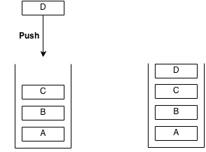
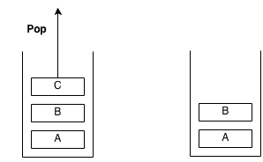
Stacks are used for function calls on the memory stack. Whenever a function is called, it is placed on the memory stack with its variables and when it is returning a value, it is popped off the stack.
A stack is usually implemented as a vector.
A vector is a stack that is implemented as an array. It is very similar to an array, but it is more flexible in terms of size. Elements are added and removed only from the end of the array. When more elements are added to the vector and the vector is at full capacity, the vector resizes itself and reallocates for 2*N space. When using an vector we can keep adding elements and let the data structure handle all the memory allocation.
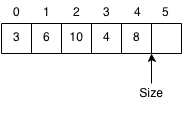
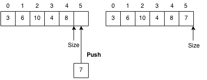
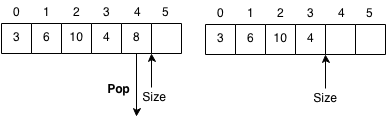
| Operation |
Create |
Get |
Set |
Push to back |
Delete |
| Time Complexity |
O(n) |
O(1) |
O(1) |
O(1) |
O(n) |
Imagine you are standing in line for a restaurant. Whoever is first in line will be served first and whoever is last in line will be served last. People can be served while more people join the line and the line may get very long because it takes a while to serve one person while more people join the queue. This is called a queue.
A queue is an abstract data type with two functions, pop and push. Removal from the front is called "pop" or "dequeue". Insertion from the back is called "push" or "enqueue". A queue follows a First In First Out (FIFO) structure meaning the first element pushed should be the first element popped and the last element pushed should be the last element popped.
Queues are often used for buffer systems, for example a text message service. The messages that arrive at the server first are relayed first and the messages that arrive later are relayed later. If there are too many text messages in the system such that the rate texts are received overwhelm the number of texts that are sent the buffer may overflow and messages will get dropped. Most of the time this won't happen because the systems are designed to handle large loads, but if there were an emergency that caused everyone to start texting many texts could be dropped.
Example of push:
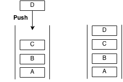
Example of pop:
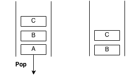
Imagine you had some train cars that were linked together where each was labelled on the inside with a letter. If you had to find a specific letter you would have to look inside the first train to check and then walk into the next train car to check the letter and so forth until you found the train car you wanted. If you wanted to insert a train car somewhere, all you would have to do it unlink the position where you wanted to insert it and then relink the new train car with the other cars. If you wanted to remove a train car all you would have to do is unlink that car from the other cars and then relink the cars that were adjacent to it. This sort of structure is called a linked list.
A pointer is something that holds the memory location of another object.
A linked list is similar to an array but it is different such that it is not stored in one block of data. Each element can be stored in a random place in memory but each element contains a pointer to the next element thus forming a chain of pointers. Think of a pointer as a link that links two train cars. Since the elements aren't in a block, accessing an element must be done by traversing the entire linked list by following each pointer to the next. However, this also allows insertion to be done more quickly by simply changing the point of the previous element and setting to the pointer of the current element to the next element. Deletion is also done by taking the previous element and changing its pointer to two elements ahead. In a linked list the links only go forward and you cannot move backward.
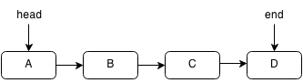
A doubly linked list is a linked list that has pointers going backwards as well as forwards.
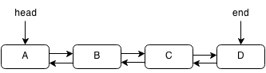
| Operation |
Get |
Add at node |
Delete at node |
Add |
Delete |
| Time Complexity |
O(n) |
O(1) |
O(1) |
O(n) |
O(n) |
Trees are data structures that follow a hierarchy, each node has exactly one or zero parents and each node has children. Trees are recursive structures meaning that each child of a tree is also a tree. A tree within another tree is called a subtree.
A child is a node that is below another node. A parent is a node that is above another node.
The element at the top of the tree with no parents is called a root. The node at the bottom of the tree with no children is called a leaf.
Each node can hold different kinds of information depending on the tree. A node can hold the children it has, the parent it has, a key associated with the node and a value associated with the node.
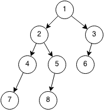
A binary tree is a tree where each node has at most two children.
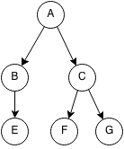
Imagine you have a grocery list that you use to keep tracking of things you need to buy. You want to make sure there are no duplicate items in the list, you can add items to the list and that you can remove items from your list. This structure is similar to what a set does.
Sets are abstract data types which are able to store values and are used for three operations: insertion, deletion and membership test.
Insertion places an element into the set, deletion removes an element from the set and a membership test is checking whether an element exists within the set.
Hash sets are sets that use hashes to store elements. A hashing algorithm is an algorithm that takes an element and converts it to a smaller chunk called a hash. For example let our hashing algorithm be (x mod 10). So the hashes of 232, 217 and 19 are 2,7, and 9 respectively.
For every element in a hash set, the hash is computed and elements with the same hash are grouped together and stored in a linked list. The linked list is called a bucket.
If we want to check if an element already exists within the set, we first compute the hash of the element and then search through the linked list associated with the hash to see if the element is contained.
Let use the example of the hashset of the elements of 3242, 3523, 123, 235 and 538. The hash set looks like this when computed:
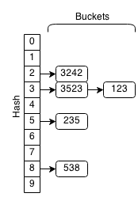
If we wanted to check if 7238 was in the hash set, we would get the hash (7238 mod 10 = 8). So we get the bucket associated with the hash 8 and we get the list of (538). When we iterate through this short list, we see that 7238 is not a member of the set.
Similarly, if we wanted to insert 7238 into the hash set, we would check if it exists and if it did not we would append the element to the end of the bucket. For deletion we would find 7238 check if it existed in the set and remove it from the bucket.
Hash sets are very efficient in all three set operations if a good hashing algorithm is used. When the objects are that being stored are large then hash sets are effective as a set.
| Operation |
Membership |
Insertion |
Deletion |
| Time Complexity |
O(1) |
O(1) |
O(1) |
A tree set is a set which stores the values in a binary search tree. To store elements in a tree set, they must be able to be sorted by a property. To insert an element, it is added to the binary tree. To delete an element, it is removed from the binary tree. To check for membership, we do a binary search for the element in the binary tree.
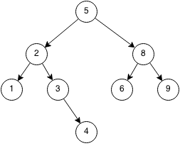
The advantage of tree sets is that they are maintained in a sorted order.
| Operation |
Membership |
Insertion |
Deletion |
| Time Complexity |
O(log n) |
O(log n) |
O(log n) |
Imagine you had a English dictionary. If you look up a word, you can find it's definition and read it out. For example if you looked up the word 'cat' in the English dictionary, you would look through the dictionary alphabetically until you found the word 'cat' and then you would look at the definition: 'a feline animal'. If you really wanted to, you could also add your own words into the dictionary and the definitions of your words. This type of structure is called a map.
Maps (also called dictionaries) are abstract data types that store pairs of key-values and can be used to look up values from the keys. The keys are like the words in an English dictionary and the definitions can be seen as the values. Maps are able to support insertion of key-value pairs, retrieve values from keys, and delete key-value pairs.
Hash maps use hash sets to store the keys which then map to their values. The advantage of a hash map is that it is very fast but a disadvantage is that it is not sorted unlike a tree set.
| Operation |
Membership |
Insertion |
Deletion |
| Time Complexity |
O(1) |
O(1) |
O(1) |
Tree maps use tree sets to store the keys which then maps to their values.
| Operation |
Membership |
Insertion |
Deletion |
| Time Complexity |
O(log n) |
O(log n) |
O(log n) |
Consider a waiting list for lung donors. The patients are given a score when they are placed on the waiting list by how much they need a lung based on their whether they smoke, risk factors, age, expected time left etc. When a lung is available, the patient with the highest score will get removed from the waiting list. During this time, more patients could be added to the queue. The behaviour is similar to a queue but instead of the first person getting in the queue getting a lung first, the person with the highest score will get it. This means that if Sam has a score of 60 and gets placed in the queue after Bob who has a score of 40, Sam will get the lung first even though Bob was in the queue before him.
A priority queue is an abstract data type with two operations: push and pop. Push adds an element into the priority queue and pop removes the highest or lowest element.
A priority queue is usually implemented as a heap because it is the most efficient because of its structure.
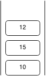
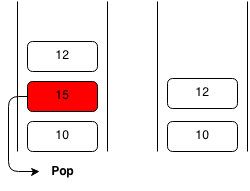
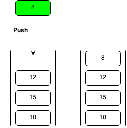
Heaps are trees which have the property that a parent node must either be greater than all the elements in its left and right subtrees (a max heap) or less than all the elements in its left and right subtrees (a min heap). Priority queue's are most efficiently implemented as heaps.
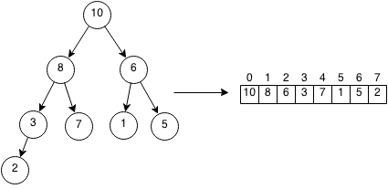
| Operation |
Push |
Pop |
| Time Complexity |
O(log n) |
O(log n) |
Introduction
Next: Advanced Graph Theory
Graphs are a set of objects where some pairs of objects called nodes or verticies are usually connected by links called edges. The nodes here can be seen numbered from 1 to 6. There are edges connecting these various nodes.
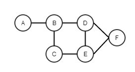
A undirected graph is a graph where an edge from A to B is the same as the edge from B to A for all edges. The above graph is undirected.
A directed or bidirectional graph is a graph where edges have direction meaning if there is an edge from A to B then there may not be an edge from B to A.
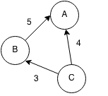
A subgraph is a subset of edges and vertices within a graph.
A directed acyclic graph (DAG) is a graph with no directed cycles (see topological sorting).
A weighted graph is a graph that contains weights or values assigned to each edge or node. Usually these weights act as the cost to reach/use that node.
Representations
A graph can be represented as a adjacency matrix or a adjacency list.
Adjacency matrixes use a matrix to store the edges between nodes. A 1 means a connection between x and y and a 0 means no connection. The edge weight could also be used instead of a 1. O(n2) where n is the number of nodes. For example the matrix for graph below is:
|
1 |
2 |
3 |
4 |
5 |
6 |
| 1 |
0 |
1 |
0 |
0 |
1 |
0 |
| 2 |
1 |
0 |
1 |
0 |
1 |
0 |
| 3 |
0 |
1 |
0 |
1 |
0 |
0 |
| 4 |
0 |
0 |
1 |
0 |
1 |
1 |
| 5 |
1 |
1 |
0 |
1 |
0 |
0 |
| 6 |
0 |
0 |
0 |
1 |
0 |
0 |
Adjacency lists use an array of linked lists to store all the edges. At x, you have a linked list of nodes that connect to that node. 1 connects to nodes 2 and 5, 2 connects to 1, 3 and 5 and so forth. O(m) storage where m is number of edges.
| Node |
edges |
| 1 |
2, 5 |
| 2 |
1 3 5 |
| 3 |
2 4 |
| 4 |
3 5 6 |
| 5 |
1 2 4 |
| 6 |
4 |
Tree
A tree is a special graph with no cycles. It has the special property that there will be only one path from one node to another node.
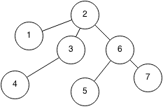
A subtree is a child tree of a tree.
Note that trees have two meanings in computer science. It can either refer to a tree data structure or it can refer to a tree in graph theory.
Spanning Tree
A spanning tree of a graph is a connected tree that spans all the nodes of the graph.
A minimum spanning tree is the spanning tree that requires the minimum of some property such as total weight or total edges.
Spanning tree algorithms are essential in networking to ensure no loops occur when sending data through a network.
| Algorithm |
Desc |
Time |
Space |
| Prim's |
Using greedy method |
O(n log n) |
O(n2) |
| Kruskal |
Using connected components |
O(n log n) |
O(n2) |
Shortest Path
The shortest path is defined as a path from one node to another while trying to minimize a certain property (least number of nodes, smallest total weight). However, shortest paths may have negative weights which leads to cycles.
Algorithms
| Algorithm |
Desc |
Time |
Space |
Detect cycles? |
| Floyd Warshall |
Computes shortest path between all pairs of nodes |
O(n3) |
O(n2) |
Yes |
| Bellman Ford |
Computes shortest path between a pairs of nodes |
O(n2) |
O(n) |
Yes |
| Dijkstra's |
Computes shortest path between a pair of nodes using the Greedy method |
O(n log n) |
O(n log n) |
No |
A cycle occurs when you start at a node and you can reach the same node from a path.
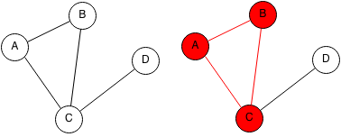
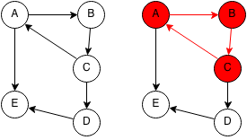
Note that trees cannot contain cycles.
A cycle can be detected using a depth first search on each unvisited node to check if the DFS tree has a backwards edge.
A topological sort or topological order of a directed graph is an order in which every node will come after its ancestors.
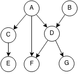
For example topological orders could be:
- (A, B, C, D, E, F G)
- (B, A, D, C, F, E, G)
But (B, A, C, F, D, E, G) is not a topological ordering because D is an ancestor of F and it comes after F.
Strongly Connected
A graph is strongly connected if all nodes in the graph follows the conditions:
- There exists a path from that node to every other node
- All other nodes can visit that node.
In other words, all nodes in a strongly connected graph can visit each other.
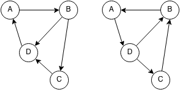
To determine if a graph is strongly connected, we first pick a node and check that we can reach all nodes from it and this checks the first property. To check the second property, we can reverse all the edges of a node (A->B becomes B->A) and then check again that we can reach all nodes from the same node.
A connected component is a subgraph where all the vertices in the subgraph connect to each other. Finding the number of distinct connected components can be done using a breadth first search or a depth first search.
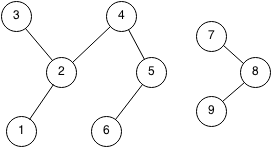
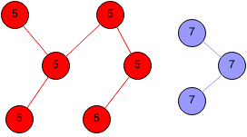
A strongly connected component is a connected component but has the property that each vertex can visit any other vertex in the strongly connected component from any path.
Introduction
Searches are used to find solutions to problems and there many ways to search for a solution. Here are some generic searches that can be applied to many different problems.
Binary search is a type of search that is able to find an object in a sorted list in O(log n). In binary search we first start at the middle element and we keep trying to halve the problem until we find the element we need.
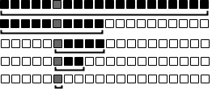
Ternary search is a type of search that finds the maximum value of a increasing or decreasing function by breaking it into 3 parts.

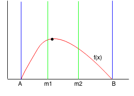
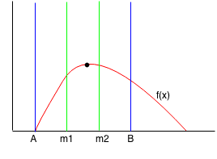
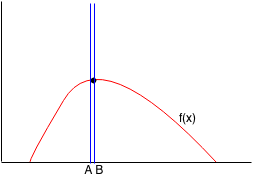
Depth first search or DFS is a method of search that goes as far as possible before backtracking. DFS is implemented using a stack and most of the time it uses an function stack for recursion.
Breadth first search or BFS is a method of search that takes the closest things first then the farthest. BFS is implemented with a queue.
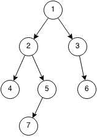
Flood fill is a search that fills a grid. It can be implemented with either DFS or BFS. We first start at some starting position and then we expand in the directions that we can (eg: up, left, down, right).
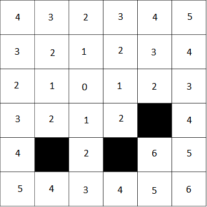
Backtracking is a search that enumerates every single possible solution by using partial solutions.
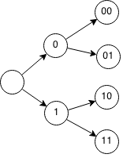
Introduction
Prerequisites: Advanced Recursion
Next: Advanced Dynamic Programming
Dynamic programming uses memoization by solving subproblems to solve the more complex problem. Dynamic programming uses recursion but instead of working backwards, it builds up the answer and reduces the number of duplicate computations.
Like recursion, dynamic programming requires two things:
- A base case and
- A subproblem that can be reduced into smaller subproblems
Fibonacci Sequence
The Fibonacci sequence is determined by f(n) = f(n-1)+f(n-2) where f(0) = 1 and f(1) = 1.
If we calculate f(5) we have:
f(5)
= f(4) + f(3)
= f(3) + f(2) + f(2) + f(1)
= f(2) + f(1) + f(1) + f(0) + f(1) + f(0) + f(1)
= f(1) + f(0) + f(1) + f(1) + f(0) + f(1) + f(0) + f(1)
= 1 + 1 + 1 + 1 + 1 + 1 + 1
= 8
However we are computing multiple values more than once. When we compute f(5) we need to compute f(4) and f(3) but f(3) is already computed when we compute f(4) and thus we have to recompute it again. We can avoid this redundancy by "building up". We can calculate f(2), then f(3) then f(4) and finally f(5) and we won't have duplicate calculations.
f(0) = 1
f(1) = 1
f(2) = f(1) + f(0) = 2
f(3) = f(2) + f(1) = 3
f(4) = f(3) + f(2) = 5
f(5) = f(4) + f(3) = 8
Formalization
Recursion
Let f(n) be the nth Fibonacci number
Base case:
fib(0) = 1, fib(1) = 1
Subproblem:
fib(n) = fib(n-1) + fib(n-2)
Example:
f(5)
= f(4) + f(3)
= f(3) + f(2) + f(2) + f(1)
= f(2) + f(1) + f(1) + f(0) + f(1) + f(0) + f(1)
= f(1) + f(0) + f(1) + f(1) + f(0) + f(1) + f(0) + f(1)
= 1 + 1 + 1 + 1 + 1 + 1 + 1
= 8
Dynamic Programming
Let fib[n] be the nth Fibonacci number
Base case
fib[0] = 1
fib[1] = 1
for x from 1 to N
fib[x] = fib[x-1] + fib[x-2]
Example:
N = 10
fib[0] = 1
fib[1] = 1
fib[2] = 2
fib[3] = 3
fib[4] = 5
fib[5] = 8
fib[6] = 13
fib[7] = 21
fib[8] = 34
fib[9] = 55
fib[10] = 89
Code
Recursion
public int fib(int n){
if(n==0 || n==1) return 1;
return fib(n-1) + fib(n-2);
}
Dynamic Programming
public int fib(int n){
int fibArr[] = new int[n];
fibArr[0] = 1
fibArr[1] = 1
for(int x=2; x<n; x++){
fibArr[x] = fibArr[x-1] + fibArr[x-2];
}
return fibArr[n];
}
Let's say that you wanted to make change for $51 using the smallest amount of bills ($1, $2, $5, $10, $20). We can use a greedy approach by always taking the highest bill that can be subtracted to find the smallest amount of change. 51 - 20 = 31 - 20 = 11 - 10 = 1. So the smallest amount of change would be comprised of 2 x $20 + 1 x $10 + 1 for a total of 5 bills. This solution seems very easy to implement, but what if the bills were not so nice?
Imagine that an alien currency was in denominations of $3, $5, $7 and $11. What would be the smallest amount of bills to make change for $13? Note that a greedy approach does not work for this alien currency. For example: 13 - 11 = 2. It is impossible to make change using the greedy approach. Note that we can make change with 2 x $5 + 1 x $3 = $13.
Let's define the problem more formally: Given a list of bills each with a positive denominations, find the lowest amount of bills required to make C dollars or return impossible if it cannot be done.
The base case for 0 dollars is very simple. There are 0 bills to make 0 dollars.
Lets try to simply this problem. Assume we only have one bill worth d dollars. If we have C dollars and we want to use the bill, then we will have C-d dollars left. So the minimum bills to make C dollars is the minimum number of bills to make (C - d) bills plus the 1 for the bill we used. For example, we want to make 10 dollars and we only have 2 dollar bills. If we use a 2 dollar bill, then the minimum bills required to make 10 dollars is the minimum number of bills required to make 8 dollars plus that 2 dollar bill. To find the minimum number of bills required to make 8 dollars, we can find the minimum number of bills to make 6 dollars plus one more 2 dollar bill. As you can see it is the same as before and it is a recursive function!
Recursion
Let d be the denomination
Let bills(C) be the minimum number of bills to make C dollars.
Base Case:
bills(0) = 0
bills(C) = impossible if C < 0
Subproblem:
bills(C) = bills(C-d) + 1 if bills(C-d) is possible
impossible if bills(C-d) is impossible
Example:
C = 10
d = 2
bills(10)
= bills(8) + 1
= bills(6) + 1 + 1
= bills(4) + 1 + 1 + 1
= bills(2) + 1 + 1 + 1 + 1
= bills(0) + 1 + 1 + 1 + 1 + 1
= 5
We can implement this using dynamic programming but it will not give us much benefit since the recursion has no recalculations.
bills[0] = 0
for c from 1 to C
if c-d >= 0 and bills[c-d] is not impossible
bills[c] = bills[c-d] + 1
else
bills[c] = impossible
Example:
C = 10
d = 2
bills[0] = 0
bills[1] = impossible
bills[2] = 1
bills[3] = impossible
bills[4] = 2
bills[5] = impossible
bills[6] = 3
bills[7] = impossible
bills[8] = 4
bills[9] = impossible
bills[10] = 5
Now let's consider the problem with multiple bills of denominations d1,d2 .... dn and we want to make C dollars. If we use a d1 bill, then we will have C-d1 dollars left and similarly if we use a d2 bill then we will have C-d2 dollars left. More generally, if we use a dn bill, then we will have C-dn dollars left. If we want to find the minimum bills to make C dollars we should try to use every bill and see which requires the minimum number of bills. So the minimum bills to make C dollars is the minimum of C - dn bills plus one more dn bill for all bills of denomination dn. For example, if we have $7 and we have bills $3,$4, and $5, the minimum number of bills to make $7 is the minimum of the minimum number of bills to make $4 plus one more $3 bill, minimum number of bills to make $3 plus one more $4 or the minimum number of bills to make $2 plus one more $5 bill.
Let denom be a list of denominations
Let bills(C) be the minimum number of bills from denominations to make C dollars
Base Cases:
bills(0) = 0
bills(C) = impossible if C < 0
Subproblem
bill(C) = { minimum of bills(C - d)+1 for d in denom if bills(C-d) is possible
{ impossible if bills(C - d) is impossible for all d in denom
Example:
denom = [3,4,5]
bill(7)
= min(bill(4)+1,bill(3)+1,bill(2)+1))
= min(min(bill(1)+1,
bill(0)+1,
bill(-1)+1)+1,
min(bill(0)+1,
bill(-1)+1,
bill(-2)+1) +1,
min(bill(-1)+1),
bill(-2)+1,
bill(-3)+1)+1)
= min( min(impossible, 1, impossible) +1,
min(1,impossible,impossible) +1,
min(impossible,impossible,impossible)+1)
= min(2,2,impossible)
= 2
However note, that we are recomputing multiple things. For example we are recomputing bill(0) multiple times and bill(-1) multiple times. If instead we worked the solution up instead of down, we can find bill(C) more efficiently. We can do this by computing bill(c) as c goes from 0 to C. Eg. we compute bill(0) then bill(1) then bill(2) .... until bill(C).
Putting it all together:
Let bills[C] be the smallest amount of bills to make the amount C, or impossible if it is not possible
Let denom be an array of denominations
Base case:
bills[0] = 0
Subproblem:
for c from 1 to C
bills[c] = impossible
for d in denom
if c-d >= 0 and bills[c-d] is not impossible:
bills[c] = min(bills[c], bills[c-d]+1)
Example:
denom = [3,4,5]
C = 7
bills[0] = 0
bills[1] = impossible (bills[-2],bills[-3],bills[-4])
bills[2] = impossible
bills[3] = 1 (bills[0]+1)
bills[4] = 1 (bills[0]+1)
bills[5] = 1 (bills[0]+1)
bills[6] = 2 (bills[3]+1)
bills[7] = 2 (bills[3]+1 or bills[4]+1)
Imagine you are a robber and you have found a large stash of valuables. Each valuable has a value and a weight. You can only hold 10kg in your bag and you want to find the highest valued haul you can get away with.
- Necklace: $10, 1kg
- Stack of cash: $270, 3kg
- Jewelry: $665, 7kg
- Rare painting: $900, 9kg
Let's try a greedy approach: we will take the items with the highest value to weight ratio.
- Necklace: $10/kg
- Stack of cash: $90/kg
- Jewelry: $95/kg
- Rare painting: $100/kg
The greedy approach will choose the rare painting and the necklace for a total of $910. However if we take the jewelry and the stack of cash we will get $935 and still fit it into the bag. How can we solve this problem? The answer is dynamic programming.
Let's first write a more formal definition of the problem:
Given unlimited quantities of N items, each associated with a positive weight and value, and a maximum total weight W that we can hold, what is the maximum value we can hold.
Let's write a more specific version of the problem: we want to find the maximum value that a bag with weight capacity W can carry out of N items of positive values and weights.
The base case for this is trivial. With zero weight, the maximum value you can have is 0.
Let's try simplifying the problem by using only one item with weight w and value v and a knapsack with maximum weight capacity W. Suppose we want to add the item into the knapsack then we have W-w capacity remaining and the value of the item. So the maximum value of knapsack with capacity W is the maximum value of W-w plus one more the item's value v. The maximum value of W-w is the maximum value of W-2w + 2v. As we can see, its the same subproblem as before and we have found a recursive relation.
For example if we had an item with value $5 and weight 4kg and a knapsack with capacity 9kg. The maximum value that knapsack of 8kg can contain is the maximum value of a knapsack of 5kg plus $5 for the item we put in the bag and so forth.
Let knapsack(W) be the maximum value of items that can fit into maximum capacity of W.
Let w be the weight of one item and v be the value of one item.
Base Case:
knapsack(0) = 0
knapsack(W) = 0 if W < w
Recursion:
knapsack(W) = knapsack(W-w) + v
Example:
v = 5
w = 4
knapsack(9)
= knapsack(5) + 5
= knapsack(1) + 5 + 5
= 10
Note that we are recomputing multiple values multiple times. We can avoid this by using dynamic programming and working up with our solution instead of backwards.
Let knapsack[W] be the maximum value with weight capacity W
Let w be the positive integer weight of the item and v be the value of an item
for k from 0 to w-1
knapsack[k] = 0
for weight from 1 to W
knapsack[weight] = knapsack[weight-w]+v
Example:
W = 9
w = 4
v = 4
knapsack[0] = 0 base case
knapsack[1] = 0 base case
knapsack[2] = 0 base case
knapsack[3] = 0 base case
knapsack[4] = 5 (knapsack[0]+5)
knapsack[5] = 5 ^
knapsack[6] = 5 ^
knapsack[7] = 5 ^
knapsack[8] = 10 (knapsack[4]+5)
knapsack[9] = 10 ^
Now let's go back to the original problem. We have N items each of positive weight and value and we want to find the maximum value to be put into a knapsack of capacity W.
If no items are left to fit in our remaining capacity, then the maximum value must be $0. This is our base case.
If we use an item, we will have capacity W-wi and the added value will be vi. We want to try all items to place into the knapsack so we try every single item and find the maximum value out of the items. So the maximum value of capacity W is the maximum value of W-wi plus the added value of vi for all items. To find the maximum value of capacity W-wi we can do the exact same thing by trying to place each item and finding the maximum value out of the items.
For example we have a knapsack of capacity 10kg and necklaces worth $30 with weight 3kg, paintings worth $50 with weight 9kg and silver bars worth $60 with weight 7kg. If we choose a necklace, we will have 7kg capacity left with the added value of $30. If we choose a painting, we will have 1kg capacity left and added value of $50. If we choose a silver bar, we will have 3kg capacity left and added value of $60. With the remaining capacity, we can choose another item and do the exact same thing.
Formalization
Let knapsack(W) be the maximum value with maximum capacity W
Let weights be an array of weights where wi is the weight of the ith item.
Let values be an array of values where vi is the value of the ith item.
knapsack(W) = 0 if wi > W for all items
knapsack(W) = max(knapsack(W-wi) + vi for all items with wi <= W)
Let knapsack[w] be the maximum value with maximum capacity W
Let weights be an array of weights where wi is the weight of the ith item.
Let values be an array of values where vi is the value of the ith item.
for w from 0 to W
knapsack[w] = 0
for w from 1 to W
maxVal = 0
for i in items
if w-wi >= 0
knapsack[w] = max(knapsack[w], knapsack[w-wi] + vi)
Example:
Number of Paths
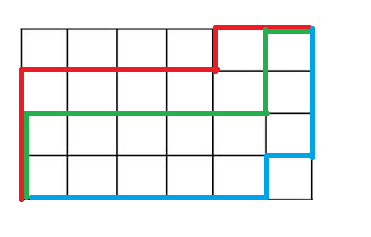
We first examined the number of paths problem in advanced recursion. However, now that we know how to use dynamic programming, we can see that the recursive solution was very inefficient because we were recomputing values many times.
Let path(x,y) be the number of ways to get to the intersection at x and y
Base case:
paths(1,y) = 1
paths(x,1) = 1
Recurrence:
paths(x,y) = paths(x-1,y) + paths(x,y-1)
Example:
paths(3,5)
= paths(2,5) + paths(3,4)
= paths(1,5) + paths(2,4) + paths(2,4) + paths(3,3)
= 1 + paths(1,4) + paths(2,3) + paths(1,4) + paths(2,3) + paths(2,3) + paths(3,2)
= 1 + 1 + paths(1,3) + paths(2,2) + 1 + paths(1,3) + paths(2,2) + paths(1,3) + paths(2,2) + paths(2,2) + paths(3,1)
= 1 + 1 + 1 + paths(1,2) + paths(2,1) + 1 + 1 + path(1,2) + paths(2,1) + 1 + paths(1,2) + paths(2,1) + ....
= 15
Instead of recomputing multiple values, we can build our solution upwards starting from 1,1
Let paths[x][y] be the number of ways to get from (1,1) to (x,y).
paths[1][1] = 1
for x from 1 to N
for y from 1 to M
paths[x][y] = paths[x-1][y] + paths[x][y-1]
Example:
N = 3
M = 5
1 1 1 1 1
1 2 3 4 5
1 3 6 10 15
Exercises
- Given an array of N integers, find the largest sum that can be using consecutive integers.
- Given an array of N integers, find the longest increasing subsequence
- Given a matrix of NxN integers, find the maximum sum of a submatrix
Introduction
String problems are more important than ever before with the enormous amount of text and information that is now available. For example, if we search for keywords on Google out of the millions of articles, how can we do it in such a way that the retrieval is relevant, accurate and efficient? If we misspell the word "shooting" as "sohoting" how can we come up with a list of autocorrected words?
When we press ctrl+f to search for a word on a page which may contain tens of thousands of words, how can we do it quickly? More formally: if we have two strings A and B, how can we search for instances of A inside B in the quickest way?
Exercises
- Given a string, count the number of palindromes greater than 1 character contained in it. E.g. abacca has 3: aba, cc, acca.
- Given a sentence, reverse the order of the sentence without using additional memory. For example: There are three blue cows reversed is cows blue three are There